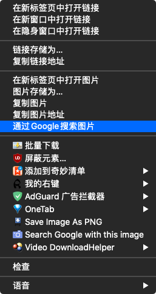
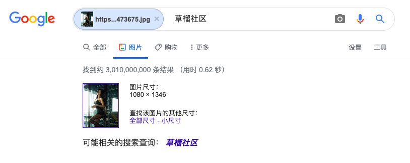

您可以在搜索时使用符号或字词，以便获得更加精确的搜索结果。Google 搜索通常会忽略不属于搜索运算符的标点符号。请勿在符号/字词和搜索字词之间加上空格。例如，搜索 site:nytimes.com 可以获得相关搜索结果，但搜索 site: nytimes.com 则不行。
I. 主理人说
*输入你的问题，其他迎刃而解：BTW，谷歌比你想象的要聪明更多。
熟练的使用谷歌搜索，以提高工作效率。个人最喜欢的便是，谷歌图片搜索以及filetype即按文件类型搜索；引用知乎儿的一个回答：你在google面前，可以看到整个互联网，而你打开百度，只看到的中国局域网。这是格局所限，百度几乎不可能改变这个现状。via Google 搜索比百度搜索好在哪些地方？
1.另外，我不是很清楚谷歌是否存在过滤行为；（基于**法，而某些搜索结果不得展示之类的）；
2.博主强烈建议大家安装谷歌浏览器，并将Google 设为您的默认搜索引擎，这将会极大的提高你的鼠标右键体验；


3.我们所能见到的互联网，亦只不过是冰山一脚；
4.毕竟爬虫爬不到的地方有很多很多；
以上。
II. 万物基于帮助文档
https://support.google.com/websearch?hl=zh-Hans （谷歌搜索中文帮助页面）
https://sites.google.com/site/resourcesandsearchstrategies/ （运算符）
III. 入门
了解一些帮助您轻松通过 Google 找到信息的提示和技巧。
提示 1：从基础开始
无论要搜索什么，都请先用简单的字词进行搜索，例如**最近的机场在哪里？**您随时可以根据需要添加一些描述性字词。
如果您要查找特定地点的某个场所或商品，可添加该地点名称。例如，**南京面包店**。
提示 2：通过语音搜索
不想打字？要使用语音搜索功能，请说“Ok Google”，或选择“麦克风”图标 !详细了解如何使用语音搜索功能。
提示 3：仔细选择措辞
在确定输入搜索框中的字词时，尽量选择要查找的网站上可能会出现的字词。 例如，不要使用**我的头很痛**，而要使用**头痛**，因为医学网站上往往会使用后者。
提示 4：不用担心输入方面的琐事
- 拼写。 无论您的拼写是否正确，Google 的拼写检查工具都会自动使用给定字词的最常用拼写形式。
- 大写。 搜索
QQ与qq所得到的结果是一样的。
提示 5：快速获得解答
对于您进行的许多搜索，Google 都会替您“分忧解劳”，在您输入搜索字词后直接在搜索结果页上给出相关解答。有些功能（例如查询与球队有关的信息）并非在所有地区都提供。
- 天气：搜索
**天气**可查看您所在地点的天气信息，如果在“天气”后加上城市名（例如**天气北京**），则可查看相应城市的天气信息。 - 字典：在任意字词前加上
定义即可查询其定义。 - 计算：输入数学公式（例如
3\*9123）或求解复杂的图形公式。 - 单位换算：输入任何换算内容，例如
3 美元兑换欧元。 - 体育：搜索球队的名称，即可查看相关赛程和比赛得分等信息。
- 基本信息：搜索名人、地点、电影或歌曲的名称即可看到相关信息。
专家搜索提示
想了解更多有助于您成为搜索达人的提示和技巧？请点击以下链接，了解更多高级搜索技巧。
IV. 优化网页搜索结果
高级搜索（总体而言）
- 转到高级图片搜索。
- 使用地区或文件类型等过滤条件来缩小搜索结果范围。
- 点击底部的高级搜索。
搜索精确尺寸的图片
在您要查找的字词后面，添加 imagesize:<宽度>x<高度> 字样。请务必添加以像素为单位的尺寸数据。
例如：`imagesize:500x400
搜索社交媒体
在字词前加上
**@** 可用于搜索社交媒体。例如：**@twitter**。
搜索特定价格
在表示价格的数字前加上 **$**。例如：**相机 $400**。
搜索 # 标签
在字词前加上 **#**。例如：**#怀旧星期四**。
从搜索结果中排除特定字词
在要排除的字词前加上 **-**。例如：**中国美食 -麻辣**
搜索完全匹配的结果
为字词或短语加上引号。例如：**"最高的建筑"**。
在某个数字范围内执行搜索
在两个数字之间加上 **..**。例如：**相机 $50..$100**。
组合搜索
在各个搜索查询字词之间加上“**OR**”。例如：**马拉松 OR 比赛**。
搜索特定网站
在网站或网域前加上“**site:**”。例如：**site:youtube.com** 或 **site:.gov**。
搜索相关网站
在已知网址前加上“**related:**”。例如：**related:time.com**。
查看网站的 Google 缓存版本
在网址前加上“**cache:**”。
重要提示：并非所有搜索运算符都能返回一个不漏的搜索结果。
参考：https://support.google.com/websearch/answer/2466433?hl=zh-Hans
V. 按文件类型搜索
Google 可将大多数类型的网页和文件内容编入索引。最常编入索引的文件类型包括：
- Adobe Flash (.swf)
- Adobe 便携式文档格式 (.pdf)
- Adobe PostScript (.ps)
- Autodesk 设计网页格式 (.dwf)
- Google 地球（.kml、.kmz）
- GPS 交换格式 (.gpx)
- Hancom Hanword (.hwp)
- HTML（.htm、.html、其他文件扩展名）
- Microsoft Excel（.xls、.xlsx）
- Microsoft PowerPoint（.ppt、.pptx）
- Microsoft Word（.doc、.docx）
- OpenOffice 演示文稿 (.odp)
- OpenOffice 电子表格 (.ods)
- OpenOffice 文本文件 (.odt)
- 富文本格式 (.rtf)
- 可缩放矢量图形 (.svg)
- TeX/LaTeX (.tex)
- 文本文件（.txt、.text、其他文件扩展名），包括采用常用编程语言的源代码：
- Basic 源代码 (.bas)
- C/C++ 源代码（.c、.cc、.cpp、.cxx、.h、.hpp）
- C# 源代码 (.cs)
- Java 源代码 (.java)
- Perl 源代码 (.pl)
- Python 源代码 (.py)
- 无线标记语言（.wml、.wap）
- XML (.xml)
Google 编入索引的文件类型
参考：https://support.google.com/webmasters/answer/35287?hl=zh-Hans
您可以在 Google 搜索中使用 filetype: 运算符将搜索结果限定为特定文件类型。例如，filetype:rtf galway 将搜索其中包含“galway”一词的 RTF 文件。
VI. 利用以图搜图功能查找相关图片
您可以依据图片查找网上的相关图片。
- 类似图片
- 包含这些图片的网站
- 用作搜索依据的图片的其他尺寸版本
上传图片
- 在计算机上打开网络浏览器，例如 Chrome 或 Safari。
- 转到 Google 图片。
- 点击“按图搜索”图标。
- 依次点击上传图片然后选择文件或浏览。
- 从计算机中选择一张图片。
- 点击打开或选择。
拖放图片
重要提示：只有 Chrome 和 Firefox 支持图片拖放功能。
- 在计算机上，打开浏览器，例如 Chrome 或 Firefox。
- 转到 Google 图片。
- 在计算机上，找到您想要用作搜索依据的图片所在的文件。
- 点击相应图片。
- 按住鼠标，将图片拖放到搜索框中。
依据网址进行搜索
- 在计算机上打开网络浏览器，例如 Chrome 或 Safari。
- 转到您想要用作搜索依据的图片所在的网站。
- 要复制网址，请右键点击相应图片。
- 点击复制图片地址。
- 转到 Google 图片。
- 点击“按图搜索”图标。
- 点击粘贴图片网址。
- 将网址粘贴到文本框中。
- 点击按图搜索。
用作搜索依据的网址不会保存在您的浏览记录中。不过，Google 可能会存储这些网址，以便用于改善我们的产品和服务。
依据网站中的图片进行搜索
- 在计算机上打开 Chrome 浏览器。
- 转到您想要用作搜索依据的图片所在的网站。
- 右键点击相应图片。
- 点击在 Google 上搜索这张图片。系统随即会在新的标签页中显示搜索结果。
Google 会如何使用您用作搜索依据的图片
Google 可能会将您在搜索时上传的图片存储 7 天。这些图片不会被纳入到您的搜索记录中，并且我们仅会在该存储期间使用它们，以改善我们的产品和服务。
VII. Googlebot
Googlebot 是 Google 的网页抓取工具的通用名称。具体而言，Googlebot 是两种不同类型的抓取工具的通用名称：用于在桌面设备上模拟用户操作的桌面版抓取工具，以及用于在移动设备上模拟用户操作的移动版抓取工具。
网站主或许可以关注一下这个，或许对提高网站曝光有所帮助；
参考：https://support.google.com/webmasters/answer/182072?hl=zh-Hans
VIII. 附注
版权属于：毒奶
联系我们：https://limbopro.com/6.html
毒奶搜索：https://limbopro.com/search.html
毒奶导航：https://limbopro.com/daohang/index.html本文链接：https://limbopro.com/archives/tips-of-google.html
本文采用 CC BY-NC-SA 4.0 许可协议，转载或引用本文时请遵守许可协议，注明出处、不得用于商业用途！